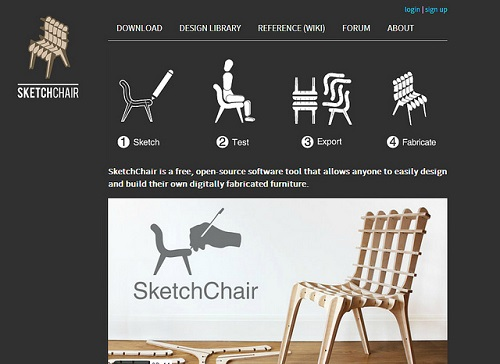
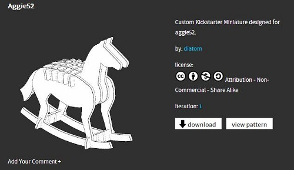

SketchChair —讓每個人設計自己的椅子

◎ 本文原載台灣創用 CC 計畫，原文章連結按此。
隨著 3D 列印技術等各種數位製造 (digital fabrication) 工具的蓬勃發展，意味著使用者自行製作獨特個人化產品世界的機會大幅提升，然而現有的電腦輔助設計 (CAD) 系統過於專業和複雜，常讓沒經驗的使用者不知如何操作，導致數位製造過程仍無法普及。
Greg Saul 是對於挑戰消費者和設計師界線感興趣的設計師、工程師，他相信個人生產是改變設計面貌的基礎。出生於紐西蘭威靈頓，他在維多利亞大學念工業設計時遇到現在的合作對象 Tiago Rorke，由於都對「互動、數位製造、電腦運算設計」三者的可能性感到好奇，便一起組成了 Diatom 設計工作室，希望能研發開放資源設計軟體讓所有人都能參與設計。
於 2009 年起，他們和東京的 JST ERATO Igarashi Design UI Project 合作，研發出讓所有人都能輕鬆操作的設計軟體 SketchChair，希望任何人都能因此善用數位製造工具，設計出自己獨特功能性、個人化的椅子。

這個軟體使用開放資源 processing.org 和 Eclipse IDE 的 java 寫成，使用者以簡單的 2D 繪圖介面畫出想要的椅子，軟體會自動產生椅子結構，並以一個物理引擎 (physics engine) 測試椅子的堅固穩定度，確保椅子可以站著，也能舒適的支撐人。另外，使用者也能讓模擬自己的虛擬人物坐在椅子上，配合自己的狀況來調整椅子，做出一個客製化的椅子。
接著，軟體會自動產生切割的檔案，使用 cnc router 、雷射切割機或裁紙機，就能以適合的材質切割出組裝的原件。使用者可以把自己的設計寄給線上數位製造服務像 ponoko.com 切割，或是寄給在地的一些工作室，由於這些椅子的原件包裝輕便，也就容易運送，收到時只要簡單的用手拼裝組合即可。
網站上除了軟體的下載，也有維基說明如何使用這個軟體，還有一個開放設計圖書館，讓所有人可以上載、下載、編輯不同的椅子設計圖，使這些設技能持續修正和演化。這些設計圖採取創用 CC 「姓名標示─非商業性─相同方式分享」授權，歡迎分享和修正，但是不能用於營利，且要尊重使用來源、以相同授權方式持續散佈。

利用這個軟體，除了椅子，其實也可以做成搖椅、桌子、搖搖馬，而且成品的大小可以自訂，不僅能根據年齡、身型調整大小，也能做成娃娃屋裡的裝飾或是設計學系的作業樣品，讓產品做為生活必需品，或是用在娛樂、教育方面。
如此一來，獲得一張客製化椅子的成本僅有裁切和運送費，整個設計的過程則是免費且友善的，鼓勵更多人一起反思、參與、分享日常生活產品的設計。
註 對於合作的東京研究室有興趣的話，可以看看「Mr./Ms. Days (MMDays) – 網路, 資訊, 觀察, 生活」部落格上的日本 UI 之神 – Takeo Igarashi – 研究的進行曲一文。
參考資料
https://www.core77.com/blog/object_culture/kickstart_diatoms_sketchchair_furniture_designed_by_you_18908.asp
https://www.livinginashoebox.com/the-free-sketchchair-software-allows/
https://www.treehugger.com/eco-friendly-furniture/sketchchair-open-source-project-lets-you-design-your-own-furniture.html
https://www.gregsaul.co.uk/words/SketchChair_TEI2011_Paper.pdf
https://vimeo.com/21250072